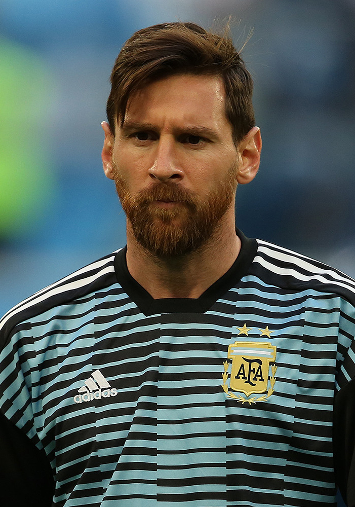

Career Overview & Playing Style
Known for his low center of gravity, burst of acceleration, precise left foot, and unmatched vision, Lionel Messi has dominated top-tier football for two decades. Whether deployed as a false nine, a creative winger, or a deep playmaker, his output has shattered record after record.

Senior Carreir Statistics
The table below presents Messi's official appearances, goal tallies, and major titles across his professional club career and the Argentina senior national team:
| Clubs | Years | Matches | Goals | Major Honors Won |
|---|---|---|---|---|
| FC Barcelona | 2004–2021 | 778 | 672 | 35 (10 La Liga, 4 UEFA Champions League, 7 Copa del Rey, 3 FIFA Club World Cups) |
| Paris Saint-Germain | 2021–2023 | 75 | 32 | 3 (2 Ligue 1 titles, 1 Trophée des Champions) |
| Inter Miami CF | 2023–Present | 39 | 34 | 2 (1 Leagues Cup, 1 MLS Supporters' Shield) |
| Argentina National Team | 2005–Present | 189 | 112 | 4 (1 FIFA World Cup, 2 Copa América, 1 CONMEBOL-UEFA Finalissima) |
| Senior Carreir Total | 2004–Present | 1,081+ | 850+ | 44 Major Trophies (Most decorated player in football history) |
Major Individual Honors
Messi has collected more prestigious individual awards than any other player in the game's history:
- 8× Ballon d'Or: 2009, 2010, 2011, 2012, 2015, 2019, 2021, 2023 (All-time world record).
- 6× European Golden Shoe: 2010, 2012, 2013, 2017, 2018, 2019 (All-time record).
- 2× FIFA World Cup Golden Ball: 2014 and 2022 (The only player to win it twice).
- 3× The Best FIFA Men's Player: 2019, 2022, 2023.
- 8× Pichichi Trophy: Top goalscorer in Spain's La Liga (All-time record).
Notable World Records
A sample of global football records held by Lionel Messi:
- Most official goals scored in a calendar year: 91 goals in 2012 (Guinness World Record).
- Most goals scored for a single club: 672 goals for FC Barcelona.
- Most appearances in FIFA World Cup matches: 26 appearances across five tournaments.
- Most assists recorded in international football and FIFA World Cup history.